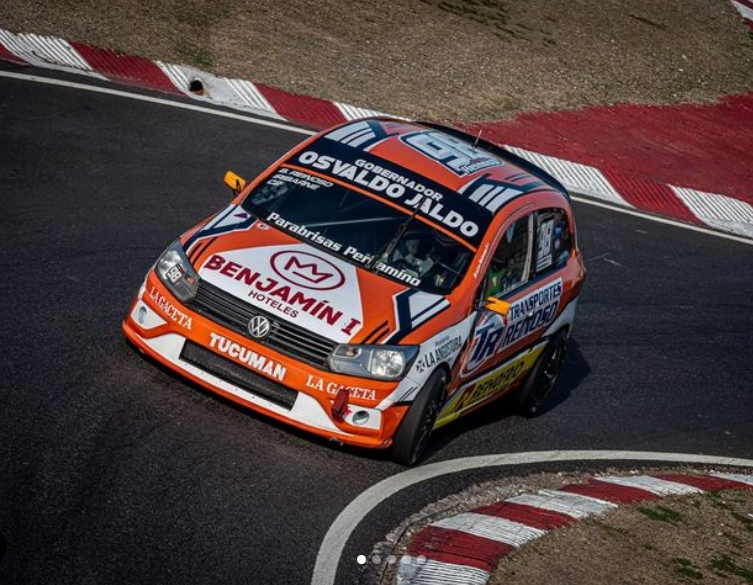
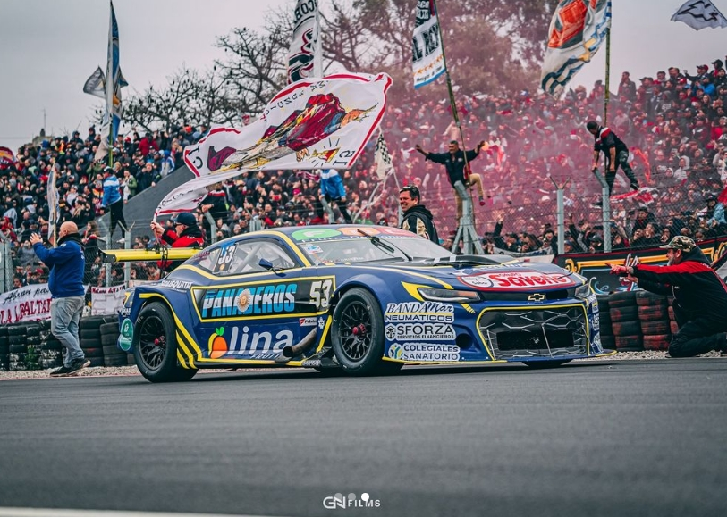

Últimas noticias
Iribarne fue excluido de la final del TC en San Luis
Luego de un fin de semana complicado, Federico Iribarne no paso la tecnica y fue exluido de la carrera por que la cilindrada se encontraba por fuera de los parametros permitidos

Paso la primera fecha de la Copa de Oro "Rio Uruguay Seguros" del Turismo Carretera en el Rosendo Hernandez de San Luis que dejo varias denuncias y exclusiones una vez culminada la competencia donde se vieron perjudicados muchos aspirantes al titulo.
Cuatro pilotos no pasaron la tecnica y dos de ellos fueron protagonistas del podio en lo que fue la victoria de Julian Santero. Estos fueron Jose Manuel Urcera, Facundo Ardusso, Juan Martin Trucco y Federico Iribarne. Los motivos de las exclusiones en el caso de Ardusso fue por anomalias en el multiple de admision. En el caso de Iribarne y Trucco por cilindrada por fuera de los parametros permitidos y en el caso de Urcera, el equipo directamente no permitio que revisen el motor.
Otras noticias
Invitado en la Clase 2 de Turismo Nacional
Federico Iribarne fue invitado por el piloto Brian Reinoso para disputar la fecha especial en el Autodromo de Buenos Aires, Juan y Oscar Galvez.
Paso el finde de TC en Buenos Aires
Un fin de semana complicado para Federico y el Uranga Racing. El auto sufrio temperatura de agua que lo retraso durante todo el fin de semana
Clasificó en el puesto 36, disputó la tercera serie y termino octavo y luego tuvo que abandonar en la final a 6 vueltas para terminar
El piloto tomó este fin de semana como un aprendizaje.
Nuevo diseño para Federico Iribarne

Fede presentó este fin de semana en el Autodromo de La Plata, Roberto Mouras el nuevo diseño del Chevrolet Camaro con el que disputara la proxima fecha del TC en Buenos Aires.
El coche tiene los colores del Club Atlético Boca Juniors, representando el fanatismo de Iribarne por el club de La Ribera.